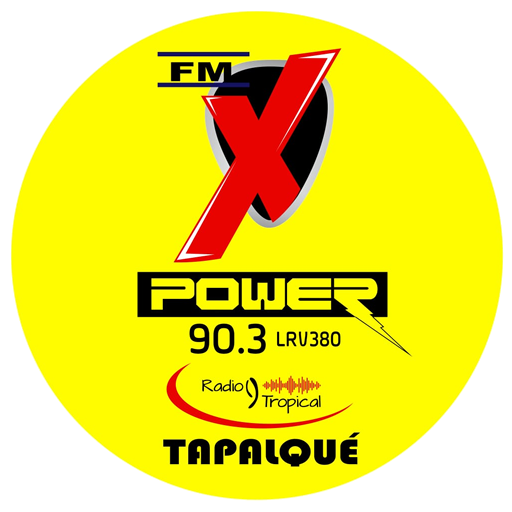

Inicio
Nosotros
Emisoras
Contacto
Buenos Aires
RADIOS AL AIRE
25 de Mayo
25 de Mayo
9 de Julio
Monte Grande
Monte Grande
Magdalena
Castelli
Navarro
Vte. López
Patagones
Patagones
Pehuajó
Pergamino
Salliqueló
Trujui
3 de Febrero
Bahía Blanca
Brandsen
Carapachay
Chascomús
Dolores
Escobar
Moreno
Moreno
Moreno
Moreno
Morón
Navarro
Pdo. de la Costa
Pdo. de la Costa
Pilar
Rojas
San Miguel del Monte
Temperley
Sierra de la Ventana
Cnel. Suarez
Bella Vista
Lincoln
Temperley
Lomas de Zamora
Temperley
S. NICOLAS ARROYOS
Carmen de Patagones
Bahia Blanca
Daireaux
Bolívar
Tapalque

Tapalque
Azul
Azul
Garre
Bragado
La Plata
Buenos Aires
La Plata
Trenque Lauquen
Lezama
Saenz Peña
30 de Agosto
Pdo. de la Costa